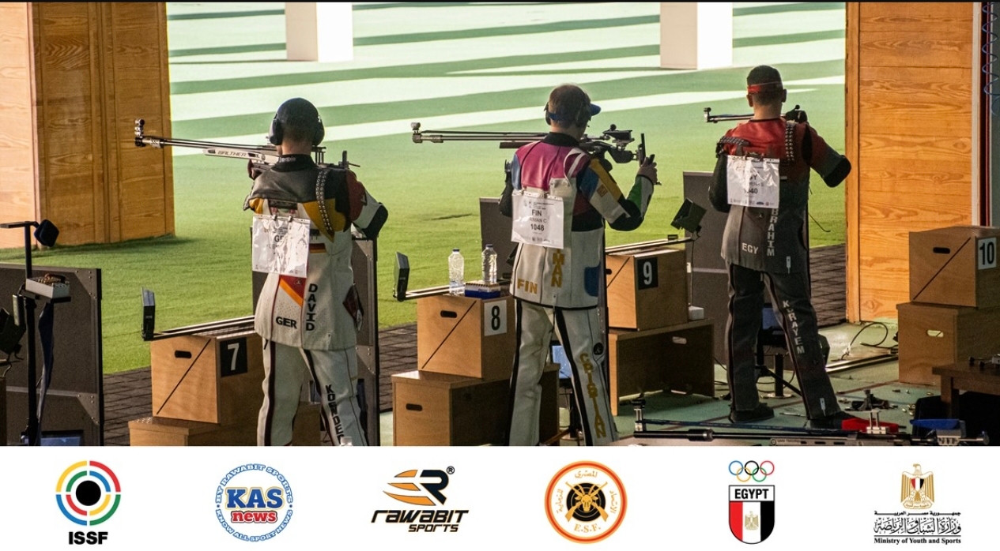

Austria leads the men’s prone team event on 18 October, a day after Finland took individual gold and Norway won the team title in three positions.
Austria won the men’s 300m prone team gold on Sunday, 18 October 2026, at the World Championship being held at Egypt International Olympic City in the New Administrative Capital. The team scored 1,782 points with 91 inner tens, ahead of Switzerland and Poland.
Alexander Schmirl scored 595, Patrick Diem 595 and Andreas Thum 592. Switzerland finished second with 1,780 points and 95 inner tens, and Poland third with 1,777 and 83 inner tens. Egypt placed eighth with 1,719 points and 46 inner tens.
Finnish and Norwegian gold in three positions
Finland’s Aleksi Leppa had won the men’s individual 300m rifle three positions title on 17 October with 591 points and 29 inner tens. Poland’s Maciej Kowalewicz matched his points total but recorded 22 inner tens to take silver, while Norway’s Jon-Hermann Hegg earned bronze with 589 points and 23 inner tens.
In the three positions team event, Norway led with 1,760 points, followed by Austria on 1,753 and Switzerland on 1,751. Egypt finished sixth with 1,673 points.
A separate event on Cairo’s calendar
The championship runs from 15 to 20 October, bringing together 57 athletes from 19 countries. The programme for 19 October includes the men’s individual prone event and the open standard rifle event. This championship is a separate competition from the Rifle/Pistol World Cup hosted by Cairo earlier in the same month.
Sources: ISSF — Approved men’s 300m prone team results, 18 October 2026؛ ISSF — Men’s 300m rifle three positions individual results, 17 October 2026؛ ISSF — Men’s 300m rifle three positions team results, 17 October 2026؛ ISSF — World Championship report, 17 October 2026؛ ISSF — World Championship preview and participation figures؛ ISSF — Cairo 2026 World Championship results and programme
Image source: International Shooting Sport Federation (ISSF).